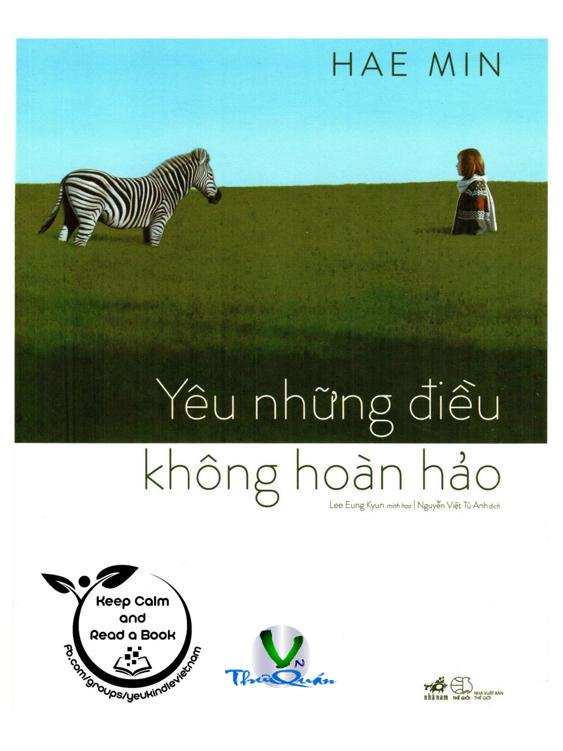

« Back
Yêu Những Điều Không Hoàn Hảo
By Hae Min

ĐẠI ĐỨC HAE MIN
LỜI NÓI ĐẦU
ĐỪNG SỐNG QUÁ HIỀN LÀNH
CHỈ CẦN BẠN TỒN TẠI LÀ ĐÃ ĐỦ RỒI
ĐIỀU NHỎ BÉ TÔI NHẬN RA KHI Ở THIỀN PHÒNG
CÁCH GIẢI QUYẾT CẢM XÚC “PHẬT LÒNG”
CÁI ÔM ẤM ÁP NHƯ ÁNH NẮNG MẶT TRỜI
LẮNG NGHE LÀ MỘT BIỂU HIỆN CỦA TÌNH YÊU THƯƠNG
GỬI NHỮNG BẠN TRẺ TÔI YÊU MẾN
KHI LẦN ĐẦU TIÊN THẤT BẠI TRONG ĐỜI
“CON YÊU MẸ RẤT RẤT NHIỀU”
HIỂU VỀ CHA
KHI GẶP NGƯỜI KHÓ CÓ THỂ THA THỨ
THƯA SƯ THẦY, LÒNG CON QUÁ U SẦU
HIỆN TẠI LUÔN THỨC TỈNH CHÍNH LÀ QUÊ HƯƠNG CỦA TÂM HỒN
“BẠN THẬT GIỐNG ĐỨC PHẬT”
HÃY CHO PHÉP BẢN THÂN MÌNH ĐAU KHỔ
KHI BẠN ĐÃ CỐ GẮNG NHƯNG TÌNH HÌNH VẪN KHÔNG TỐT ĐẸP HƠN
❊ ❖ ❊
Notes